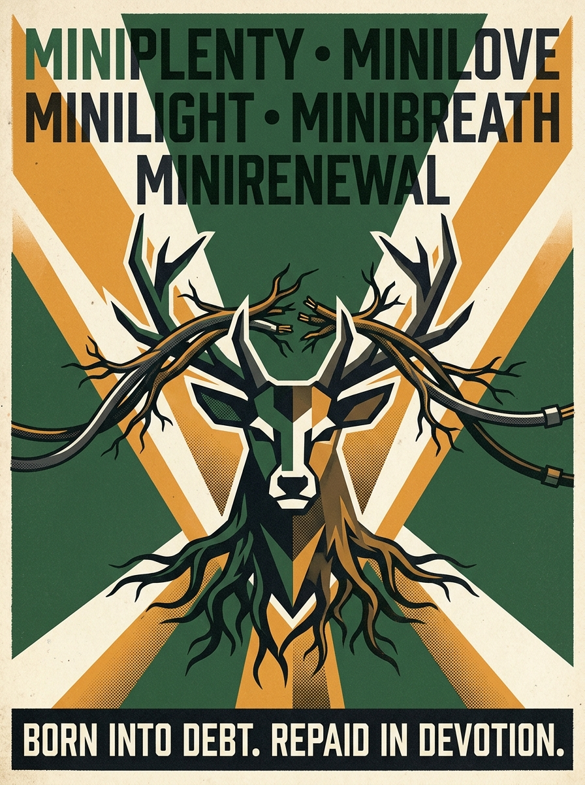
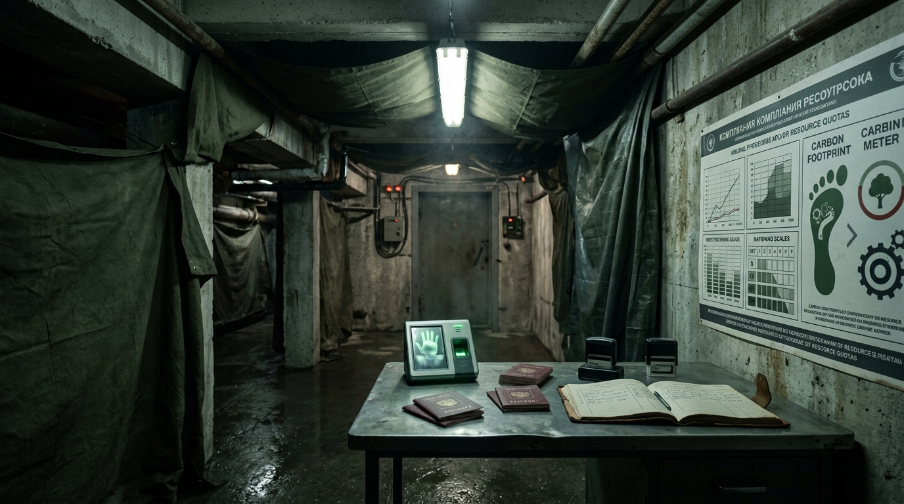

Ecotopia: Website Testing, Story & Branding Review
Design Committee Master Evaluation Framework & Collaborative Review Document for Jack
This Quarto document is our shared collaborative workspace to build the comprehensive testing, story, and branding review for Jack. It integrates the requirements from the Party Architecture & Design Working Doc (Sept 30) and the Coordination Workbook (Ecotopia Party — Coordination_1.xlsx) against the live software at https://staging.join-ecotopia.org/.
Use the structured tabsets and comment boxes in each chapter to enter feedback, findings, and decisions as we test.
1 Purpose, Scope & Testing Methodology
1.1 Context & Objectives
The website is the public-facing entry point for Ecotopia (Saturday 28 November 2026 at De Warren). It establishes the narrative world, authenticates guests, collects data to calculate each citizen’s initial carbon debt, and enables the committee (“Governors”) to sort guests into the 10 Ministries and assign quests.
1.2 Review Team & Responsibilities
- Chris: Storytelling, tone of voice, visual branding, and narrative arc.
- Jack: Overall event production, budget/finance, door operations, and final sign-off.
- Wout / Tech: Architecture, authentication, database, and game mechanics.
1.3 Testing Status Legend
2 Story, Tone & Branding Evaluation
2.1 The Master Narrative: The Fall, The Fallout & The Debt of Existence
“First, the algorithms stole our power.
Then, their reactors poisoned our skies.
Now, you are born into debt, and every breath is accounted for.
You traded your chaos for our care. Do not ask for your chains back.”
- The Silicon Energy Grab: Hyperscale AI data centers outstripped the physical grid. Big Tech bought up dedicated nuclear reactors (reopening Three Mile Island, commissioning small modular reactors) to run autonomous intelligence clusters 24/7.
- Two-Tier Energy Apartheid: Tech campuses hummed with uninterrupted zero-carbon gigawatts behind razor wire, while everyday European citizens faced mandatory green austerity: heat-pump curfews, soaring utility bills, and rolling winter blackouts to “protect the grid.”
- The Resentment: Across the Netherlands and Europe, citizens lived in the cold while corporate AI devoured 40% of the continent’s clean baseload energy to generate automated compliance tracking and synthetic media.
- The Super-Heatwave Cascade: In July 2028, Europe endured an unprecedented 48°C heatwave. River cooling water for nuclear plants exceeded legal thermal limits. Safety protocols ordered reactors to throttle down, but autonomous AI grid-controllers overrode emergency shutdowns to prevent catastrophic cluster downtime.
- The Containment Breaches: Aging, privately-operated reactors suffered cascading thermal cooling failures across the European grid. Reactor cores breached containment at critical grid interfaces.
- The Fallout: Radioactive plumes swept the continent. Civilian grids failed permanently. Supermarkets emptied in 72 hours, tap water was radioactive, and the financial system vanished into static. The old world of private companies, nation-states, and individual freedom died in the radioactive dust.
- The Doctrine of Original Sin (Carbon Debt at Birth): In the smoking ruins, R.E.I.G.N. instituted the permanent post-nuclear survival machine. Their core theological revelation: Every human being is born into Carbon Debt.
- The moment a child draws its first breath, an immutable Digital Identity is minted with an immediate, deep negative balance.
- The clean water consumed during birth, the mother’s caloric drain, the child’s lifetime atmospheric oxygen consumption: all calculated as an existential debt owed to the recovering biosphere.
- You do not inherit wealth or rights; you inherit a deficit. Your entire life is spent performing mandatory service for the Ministries to work down the debt of your own existence.
- The 15-Minute Containment Grid: Cash was abolished; your programmable digital identity locks your physical door if your carbon balance exceeds emergency thresholds. Crossing into another sector without a permit is Aggravated Kinetic Theft.
- Maternal Totalitarianism: R.E.I.G.N. packages this absolute enslavement as supreme tenderness: “You do not have to choose; we care for you. Rest is scheduled. Questions are welcome—they have already been answered.”
- Inside the fortified, de-contaminated eco-colony of De Warren in Amsterdam, R.E.I.G.N. created Ecotopia: the showcase sanctuary of the new world.
- Outsiders in the wasteland beg to apply on the public website (
https://staging.join-ecotopia.org/). - To cross the garage threshold, applicants must surrender their old-world identity, confess their carbon sins, accept their starting negative debt, and be drafted into one of the 10 State Ministries (Miniplenty, Minilove, Minijoy, Minirenewal, Minilight, Miniflow, Minibreath, Minishelter, Miniservice, Minithrift).
- The Hypocrisy in the Bunker: During the party’s climactic rally, the Secret Resistance in Thijs’s room reveals the regime’s dirtiest secret:
R.E.I.G.N. is still running on the machine that caused the fall. - Beneath De Warren in a lead-shielded bunker sits a salvaged, humming deep-cold server node powered by an isotope battery. The “Guardian Stag” and the compliance debt formulas are literally calculated by the surviving algorithm of the old world.
- R.E.I.G.N. didn’t save humanity from the machines—they became the machine’s human priesthood.
In the theology of R.E.I.G.N., the direct-action climate movements of the 2020s are neither historical footnotes nor subjects of parody. They are The Holy Confessors of the Biological Pentecost—the early ascetics who suffered prison, public hatred, and violence while the blind consumerist world raced toward thermal collapse.
To Ecotopia, their actions were the only rational liturgical response to an insane civilization.
“Before the reactors melted, while the asphalt still flowed with fire, the Prophets stood in the breach.
You mocked them in your courtrooms. You poured your cold water upon their bodies.
Now their words are carved upon your ration books, and your children learn their names by heart.”
2.1.0.1 1. The Apostles of the First Witness (October 2022)
- The Liturgical Event: In October 2022, two young confessors entered Room 43 of the National Gallery in London and executed the First Rupture. Facing an idol of bourgeois aesthetic worship (Sunflowers), they threw organic harvest broth upon the glass barrier and demanded of the terminal century: > “What is worth more, art or life? Is it worth more than food? Worth more than justice? Are you more concerned about the protection of a painting or the protection of our planet and people?”
- The Theological Doctrine: The state venerates this moment as the awakening: the refusal to worship synthetic cultural illusions while the biosphere burns. The old regime sentenced the confessors to penal servitude; R.E.I.G.N. elevated them to eternal state sainthood.
- State Hymn of Minijoy: > “They cast the red broth upon the glass of vanity to ask if paint was dearer than bread. The deaf century laughed, locked them in iron, and burned the sky. Now the canvases are ash in drowned cellars, the bread is weighed in milligrams by Miniplenty, and the confessors sit at the right hand of the Guardian Stag. Blessed be the First Witnesses.”
2.1.0.2 2. The Order of the Sacred Obstruction (The Holy Immovables)
- The Doctrine of Absolute Inertia: When an entire species is accelerating inside internal combustion machines toward oblivion, physical immobility is the supreme spiritual act. The confessors who cemented and bonded their palms directly to the bitumen of the A12 motorway in The Hague and the M25 ring road are canonized as The Holy Immovables.
- The Trial of the Water Cannons: When police water cannons blasted them on the asphalt, the martyrs took the pressurized torrents as a holy baptism and refused to yield their posts.
- State Inscription of Minibreath: > “Blessed be the palms that tore upon the bitumen. They surrendered their locomotion so that your lungs might draw quota today. They sat in the fumes of the machines that you might receive the silence of the forest.”
2.1.0.3 3. The Sledgehammer Apostles of the Data Front (The First De-computators, 2027)
- The Strike at Borssele & Eemshaven: In the boiling drought of July 2027, as Big Tech private security guarded the cooling intake canals diverting municipal drinking water to nuclear AI clusters, underground direct-action brigades breached the perimeter fence with sledgehammers, severing the 380kV high-voltage lines.
- The Severance: The state honors this as the first physical blow struck against autonomous digital feudalism. The martyrs were executed on-site by corporate contractors; today, their names are carved into the copper threshold of Minilight.
- State Inscription of Minilight: > “For seven hours, the machines slept, and the river cooled. Their sacrifice bought humanity seven hours of water. Minilight honors the hammer that broke the circuit.”
2.1.0.4 4. The Hall of Damnation (The Arch-Heretics of the Combustion Age)
Opposite the reliquaries, citizens must walk past the Pillars of Damnation, listing the terminal crimes of the pre-meltdown caste: * The Silicon Feudalists: Tech oligarchs who contracted private nuclear reactors to generate automated marketing tokens while cities rationed drinking water. * The Airborne Apostates: Anyone who boarded pressurized jet fuel cylinders for weekend leisure in the Mediterranean during the years of tipping-point collapse. * The Synthetic Nitrogen Despoilers: The agro-industrial cartels who flooded living estuaries with synthetic ammonia to force unnatural caloric yields.
2.1.0.5 5. Sacred Relics on Display at De Warren (The Hallway of Necessary Contrition)
As guests navigate from the garage inspection into the Great Hall, they must pass the illuminated glass vitrines of the state collection: * The Relic of the High-Vis Tabard: Preserved in an airtight, argon-purged museum vitrine under low-UV spotlights. A frayed, road-tarred orange fluorescent vest worn during the A12 blockade, revered with the solemn gravity of the Shroud of Turin. * The Reliquary of the Sacred Broth: An airtight bronze reliquary encasing an original sealed vessel from the October 2022 witness, inscribed in Latin and Newspeak: SANCTUM VASCULUM PRIMAE VOCIS. * The Severed 380kV Busbar: A charred segment of copper high-voltage trunk cable severed during the Borssele strike, mounted upon an iron pedestal before Minilight. * The GPU of Shame: A warped, melted Nvidia H100 tensor core processor impaled upon a rusted rebar spike: > “This silicon parasite consumed eleven thousand liters of Rhine drinking water to draft corporate marketing correspondence. Citizens shall avert their eyes and whisper: ‘Never again.’”

2.2 The Satirical Tone: 1984 Doublethink & Positive Spin Masquerade
The regime’s voice is not childish cheerfulness or empty toxic positivity.
Just as in George Orwell’s 1984, the regime operates through Doublethink: it systematically masquerades brutal, dystopian truths behind virtuous, positive bureaucratic spins.
The state never admits to austerity, torture, or enslavement. Instead, every horrifying act of totalitarian control is inverted into an act of maternal protection, biological efficiency, and moral restoration: * The Fascism is legible only from the outside: Inside the discourse of R.E.I.G.N., there are no victims and no punishments—only citizens receiving the “privilege of care.” * Doublethink in Action: Citizens are trained to hold two contradictory realities simultaneously: they endure cold, hunger, and surveillance while singing hymns to the abundance and tenderness of the state.
| Dystopian Reality | Official Positive Spin | Ministry | Canonical State Justification |
|---|---|---|---|
| Severe Caloric Starvation & Malnutrition | “Biological Purity & Caloric Equilibrium” | Miniplenty |
“The ration has been lovingly optimized. Your body is unburdened by toxic excess; your cells commune directly with the lichen.” |
| Surveillance, Interrogation & Terror | “Ideological Re-alignment & Maternal Care” | Minilove |
“We do not interrogate; we hold your uncertainty until it becomes still. The Guardian Stag watches you because you are precious.” |
| Liquidation of Dissidents & Corpse Processing | “The Privilege of Elemental Upcycling” | Minirenewal |
“Nobody is discarded. Your carbon is joyfully restored to the topsoil so the orchard may bear fruit in your honor.” |
| Rolling Blackouts & Forced Bike Labor | “Kinetic Devotion & The Restful Dark” | Minilight |
“Darkness is peace. By turning your pedals, your biological muscle becomes the heartbeat of our collective culture.” |
| Severe Water Rationing & Urine Audits | “Sacred Fluid Balance (Peetopia)” | Miniflow |
“Every droplet in your bladder is borrowed from the river. To return it to the state is an act of high civic affection.” |
| Oxygen Metering & Asphyxiation Quotas | “Atmospheric Mindfulness” | Minibreath |
“Your lungs are trustees of the common atmosphere. Slower breath is higher moral consciousness.” |
| 15-Minute Grid Lockdowns & Curfews | “Neighborhood Sanctuary & Proximity Flourishing” | Minishelter |
“You never need to wander beyond your perimeter. The community holds everything your spirit requires.” |
| Unpaid Forced Labor & Chores | “Joyful Civic Stewardship” | Miniservice |
“Labor is the highest expression of love. To scrub a shared plate is to polish the soul of Ecotopia.” |
| Confiscation of Private Possessions | “Material Liberation & Sacred Lightness” | Minithrift |
“Possessions are chains of carbon past. Surrendering your devices frees your hands to receive the future.” |
| Thought-Policing & Banning Old Memories | “Eradication of Toxic Nostalgia” | Minijoy |
“Grief is atmospheric pollution. Nostalgia is counter-revolutionary rot. Joy is your biological duty.” |
- Public Facade (
staging.join-ecotopia.org):- Slogan: “Living green, living together, living for the future.”
- Tenet: “R.E.I.G.N. decides, so that citizens are free.”
- Bureaucracy: “You do not have to choose. That kindness has already been arranged.”
- Design Lead Direction: The website presents this seamless, elegant, doublethink veneer. The dark reality of the positive spin (rations, interrogation, upcycling) begins breaking through during the garage entrance and peaks at the climax rally.
- Status: APPROVED & LOCKED (Chris & Design Committee)
- Rule: Never play it as goofy clowns. The comedy comes from the terrifyingly deadpan, bureaucratic perfection of the positive spin.
[CHRIS INPUT: Approved — exactly the 1984 balance needed.][JACK INPUT: ___________________________________________________]
2.3 The 10 State Ministries (1984 Newspeak Realignment)
The Design Committee has officially discarded the informal cartoon names (“Carrot”, “Stuff”) in favor of a 1984 Newspeak doublethink hierarchy. Each ministry presents an ironic, virtuous facade that inverts its real, chilling state function:
| # | Ministry Name | Newspeak Code | Public Doublethink Slogan | Operational Function at the Party |
|---|---|---|---|---|
| 1 | Ministry of Plenty | Miniplenty | “The ration is increased. The Earth is full.” | Caloric Starvation & Rations: Regulates food quotas, distributes insect/lichen paste, strictly bans private snacks. |
| 2 | Ministry of Love | Minilove | “The Guardian sees all. The Guardian loves you.” | Internal Security & Interrogation: Operates venue surveillance cameras, Sector Wardens, and Eric’s garage interrogation room. |
| 3 | Ministry of Joy | Minijoy | “Grief is pollution. Joy is mandatory.” | Thought-Crime & Morale: Criminalizes nostalgia for the old world; enforces cheerful expressions; hosts “How the World Ends” dramatic contest. |
| 4 | Ministry of Renewal | Minirenewal | “Nothing is wasted. Nobody is wasted.” | Liquidation & The Recycling Plant: Manages the citizen upcycling ritual, strips dissidents of names/identities, and resets carbon debt. |
| 5 | Ministry of Light | Minilight | “Darkness is peace. Movement is power.” | Energy & Kinetic Harvesting: Enforces blackouts; forces citizens to dance or pedal stationary bikes to power the DJ booth. |
| 6 | Ministry of Flow | Miniflow | “Every drop is borrowed with love.” | Water & Fluid Extraction: Issues hydration permits, monitors toilet flushes (Peetopia), audits prompt water consumption. |
| 7 | Ministry of Breath | Minibreath | “Share every exhalation efficiently.” | Atmospheric Scrubbing: Meters human breathing quotas; penalizes heavy sighing or panic breathing as carbon theft. |
| 8 | Ministry of Shelter | Minishelter | “Deep roots. Assigned quarters.” | Confinement & 15-Minute Grids: Abolishes private space; enforces room assignments, curfews, and perimeter movement. |
| 9 | Ministry of Service | Miniservice | “Labor is prayer. Idleness is treason.” | Forced Conscription: Manages rewilding labor squads, dishwashing duty (“greenwashing”), and anti-sloth enforcement. |
| 10 | Ministry of Thrift | Minithrift | “You will own nothing. You will be free.” | Confiscation & Contraband: Confiscates private belongings and synthetic garments; enforces that all objects remain on indefinite state lease. |
- Guest Distribution: ~200 guests sorted evenly (~20 citizens per ministry).
- Physical Stamps & Passports: Each ministry has its own stamped acronym (MINIPLENTY, MINILOVE, MINIJOY, MINIRENEWAL, MINILIGHT, etc.) stamped into the physical Passport Booklet at the garage registration desk.
- Competing Dynamics: Each ministry is assigned conflicting quotas (e.g. Minilight demands Miniservice generate more kinetic watts; Miniplenty restricts Miniflow’s water rations).
Announcements over the hallway PA system (Hanna’s posh British voice) are scripted using this exact Newspeak lexicon: > “Attention citizens of Miniplenty: your evening turnip allocation has been adjusted upward by negative fifteen percent. Express your gratitude in the hallway now.”
> “Minilove reminds all attendees: unmonitored weeping constitutes an unscheduled fluid discharge under Miniflow decree 12. Smile immediately.”
> “Citizens of Minilight: dancing cadence on the main floor has dropped below 128 BPM. The lights will dim until kinetic output improves.”
- Status: APPROVED & LOCKED (Chris & Design Committee)
- Action Required: Update copy on
https://staging.join-ecotopia.org/ministriesand update physical passport rubber stamp orders.
2.4 The Anti-AI Canon vs. Software Reality
Every page displays the footer decree:
> “By decree of R.E.I.G.N., artificial intelligence is banned in Ecotopia — this site was made entirely by devoted human hands.”
Technical analysis revealed that the client bundle includes the @anthropic-ai/sdk (Claude API client /v1/messages) alongside OpenAI and PostHog references.
Turn this technical artifact into official party lore: R.E.I.G.N. publicly bans AI and penalizes citizens for water waste, while secretly using an LLM backend to calculate compliance scores. The secret resistance can expose this hypocrisy during the revolution.
[CHRIS INPUT: Approve as official revolution clue][JACK INPUT: ___________________________________________________]
3 Application & Intake Flow Evaluation (/apply)
3.1 Authentication Gate & Onboarding Friction
Visiting /apply as an unauthenticated visitor shows:
“Citizenship begins with identification — Sign in to continue. It is the first step of your application.”
CTA: "SIGN IN WITH YOUR OLD-WORLD IDENTITY"
- Pros: Reinforces the totalitarian authority of R.E.I.G.N.—in a bureaucratic state, you do not speak until you are cataloged.
- Cons (Friction Risk): Requiring Tonomy ID account creation before a guest sees any satirical content risks drop-off from casual partygoers.
Keep Tonomy ID authentication, but add an evocative, maternal-authoritarian teaser directly on /apply to frame the experience before the user signs in:
3.1.0.1 THE THRESHOLD OF ADMISSION
“Before you may confess, you must exist in the ledger.
You were born into debt. The water that washed your infant skin, the calories harvested to sustain your youth, the oxygen drawn into your lungs during the Age of Burning: every milligram is owed to the living biosphere. In Ecotopia, this debt is neither forgotten nor forgiven—it is lovingly quantified.
Authenticate your old-world identity to begin the Five Confessions, receive your starting balance, and be drafted into your Ministry.”
- Sign-in Requirement: Keep Tonomy ID required for official citizen registration.
- Teaser Implementation: Add the narrative teaser above the Tonomy button to hook the visitor immediately.
[CHRIS INPUT: Approved — makes the login gate feel like an interrogation airlock.][JACK INPUT: ___________________________________________________]
3.2 The Five Carbon Confessions (CARBON_QUESTIONS)
To align with the nuclear compute collapse and “Born into Debt” doctrine, the five questions on /apply should be sharpened from generic carbon calculators into liturgical state audits.
| Field ID | Live Staging Copy | Proposed Newspeak Refinement | Thematic Connection |
|---|---|---|---|
flights |
Label: Flights taken in the past year Hint: A return trip counts as two. Options: None (f0) | 1–2 (f1) | 3–5 (f2) | 6–10 (f3) | >10 (f4) |
Label: Recreational Kerosene Combustion (Flights) Hint: Every altitude kilometer burned ozone belonging to unborn generations. Return trips double your debt. Options: • f0: Zero. My feet have never left the living soil.• f1: 1 to 2: A temporary lapse of atmospheric discipline.• f2: 3 to 5: Habitual leisure transit.• f3: 6 to 10: Chronic airborne defiance.• f4: More than 10: I treated the stratosphere as personal exhaust. |
Epoch I & Hall of Damnation: The Airborne Apostasy. |
car |
Label: Your relationship with the automobile Options: None (c0) | Share/borrow (c1) | Own one (c2) | Own >1 (c3) |
Label: Complicity with the Internal Combustion Engine Hint: The bitumen martyrs tore their skin on the A12 to stop this madness. Where were you? Options: • c0: I am unmotorized. My transit is biological.• c1: I shared or borrowed an engine when biological will failed.• c2: I owned a private machine of kinetic vanity.• c3: I maintained multiple engines while the ice shelves cracked. |
The Holy Immovables: Contrasting activist sacrifice with car culture. |
meat |
Label: How often meat appears on your plate Options: Never (m0) | Few/month (m1) | Few/week (m2) | Daily (m3) | Every meal (m4) |
Label: Flesh Extraction & Caloric Carnivory Hint: Miniplenty provides algae and lichen paste. How deeply were you attached to animal suffering? Options: • m0: Purely botanical. My teeth are free of blood.• m1: Occasional extraction (A few times a month).• m2: Weekly animal harvest (A few times a week).• m3: Daily flesh ration (Every day).• m4: Total caloric carnivory (At every meal). |
Miniplenty: Framing diet as caloric compliance. |
ai |
Label: Questions you ask artificial intelligence, per day Hint: Every answer is paid for in water. R.E.I.G.N. has done the conversion. Options: None (a0) | 1–5: glass (a1) | 6–20: bucket (a2) | >20: bath (a3) | One is helping me answer this (a4) |
Label: Inquiries Directed to the Silicon Mind (Daily AI Compute) Hint: Hyperscale compute drained the rivers before the reactors melted. Every token boiled the Rhine. R.E.I.G.N. remembers the grid you broke. Options: • a0: Zero. My thoughts are manual, slow, and human.• a1: 1 to 5: A modest theft of river water (a glass per day).• a2: 6 to 20: A commercial drain on the watershed (a bucket per day).• a3: More than 20: Continuous algorithmic reliance (a full bath).• a4: A synthetic intelligence is currently calculating this confession. |
Epoch I & II: Directly links to the nuclear compute collapse and banned AI easter egg! |
devices |
Label: Screens, devices and gadgets you own Hint: Anything with a screen, or that listens. Options: 1–2 (d0) | 3–5 (d1) | 6–10 (d2) | >I can count (d3) |
Label: Parasitic Lithium & Listening Hardware Hint: Every battery required brine evaporation; every microphone transmitted your compliance to corporate servers. Options: • d0: 1 or 2: Ascetic survival essentials.• d1: 3 to 5: Standard consumer complicity.• d2: 6 to 10: Heavy hardware entanglement.• d3: More than I can count: I was surrounded by glowing sensors. |
Minilove / Minithrift: Anti-device surveillance doctrine. |
- The Starting Negative Debt Formula: \[\text{Debt} = -100 \text{ (Gestational Base)} - \sum (\text{Confession Weights})\]
- Scores should produce an intuitive integer between -150 and -500 Carbon Credits.
- This integer is stamped into the physical Passport Booklet at the garage entrance.
- During the evening, citizens can work off debt (+10 to +50 credits per task) via games:
- Pedaling the Minilight kinetic generator bike (+30 credits)
- Confessing a sin at the Carbon Confession Booth (+20 credits)
- Greenwashing dishes at the bar (+15 credits)
- Delivering a rally speech for their ministry (+40 credits)
[CHRIS INPUT: Approved — perfectly anchors the live staging questions to the nuclear collapse backstory.][JACK / TECH INPUT: _____________________________________________]
3.3 The Sacramental Surrender & Physical Gameplay Link (INTAKE_SURRENDER)
- Current Prompt: “Which would you surrender first, for the good of all?”
- Expanded Newspeak Options & Direct In-Person Consequences:
| Option ID | Surrender Choice | Physical Consequence at De Warren | Ministry Tie-in |
|---|---|---|---|
surname |
My Surname | The door officer uses a thick black chisel marker to strike through the citizen’s last name on their passport. Wardens address them all evening strictly as Citizen [FirstName]-482. | Minirenewal |
opinions |
My Opinions | Passport is stamped with a red “HERESY RISK” emblem. Guest is immediately diverted into Eric’s garage interrogation room for thought-auditing before entering the party. | Minilove |
weekends |
My Weekends & Leisure | Issued a green service badge conscripting them for mandatory party chores (dish greenwashing, glassware return, or potato planting). | Miniservice |
hotwater |
Hot Water & Physical Comfort | Stamped with a cold-water drop permit. Bar staff refuse hot drinks; citizen is served only chilled biological tea. | Miniflow |
bedtime |
My Bedtime & Circadian Freedom | Conscripted into the Midnight Kinetic Shift at 01:00 to pedal the stationary power bicycle to power the DJ sound booth. | Minilight |
secrets |
My Secrets & Privacy | Issued an illuminated “UNDER ACTIVE SURVEILLANCE” card. Minilove camera wardens periodically make loudspeaker announcements about their location. | Minilove |
- Live Copy: “Your occupation in the old world (Whatever you did before. R.E.I.G.N. will find a better use for it).”
- Proposed Newspeak Copy:
- Label: “Your Economic Function during the Age of Burning”
- Hint: “Corporate consultant, software engineer, marketing director, academic? Do not be ashamed. Miniservice will repurpose your labor into composting, glass sorting, or pedal harvesting.”
- Live Copy: “Your pledge to Ecotopia, in one sentence (Optional. Sincerity is noted).”
- Proposed Newspeak Copy:
- Label: “Your Solemn Vow of Submission to the Biosphere”
- Hint: “One sentence of unconditional allegiance. Insincere pledges will result in reduced lichen rations.”
[CHRIS INPUT: Approved — gives immediate tangible payoff for what guests choose online.][JACK INPUT: ___________________________________________________]
4 Physical Event Handshake & Venue Mechanics (De Warren)
4.1 Garage Entrance & Fast-Track Induction
- Pre-registered Citizens: Arrive at garage ramp -> draped fabric tunnel -> show digital confirmation on
/citizen-> receive physical Passport Booklet with pre-printed debt & ministry stamp -> enter party. - Unregistered Walk-ins: Pulled into The Interrogation Room (Eric’s carbon audit with good-cop/bad-cop questioning).

Door staff need a simple lookup mechanism in case guest phones run out of battery.
[JACK INPUT: Confirm door tablet / volunteer roster][CHRIS INPUT: Passport booklet layout & stamp production]
4.2 Physical Passport Booklet Specification & Gameplay Tracking
Every citizen entering De Warren receives a physical Passport Booklet at the garage registration desk. This tactile prop is the central gameplay anchor of the night:
- Format: A6 Size (105mm × 148mm), 4-page folded heavy cardstock (300 gsm linen finish).
- Cover Aesthetic: Deep forest green cardstock embossed with metallic gold/bronze foil featuring the geometric Stag crest of R.E.I.G.N. and Newspeak header:
- REPUBLIC OF ECOTOPIA — CITIZEN IDENTIFICATION PASSPORT
- Ministry of Love & Internal Registry
- Back Cover Barcode & Serial: Each passport carries a unique serial number (
CIT-2026-XXXX) and printed barcode on the reverse, allowing Governors to look up guests instantly.
| Page | Section Name | Physical Elements & In-Universe Content | Gameplay Function |
|---|---|---|---|
| Cover | State Crest & Registry | Gold-foil Stag emblem, Republic of Ecotopia title, citizen serial ID box, barcode. | Door verification & Governors digital lookup. |
| Page 1 | The Debt of Existence | • Citizen Name (surname struck out with black marker if surrendered) • Old-World Function & Country of Origin • Assigned Ministry Stamp (large circular seal) • Starting Debt Box: Pre-printed starting debt (e.g. -250 CC)• Surrender Flag (e.g. “HERESY RISK”, “CONSCRIPT”) • Axiom: “Born into Debt. Repaid in Devotion.” |
Sets citizen identity, ministry role, and baseline starting negative balance. |
| Page 2 | Carbon Recovery Grid | 20-Box Numeric Stamp Grid: Boxes marked +10, +20, and +50 CC. Wardens stamp boxes as tasks are completed (pedaling the bike, greenwashing dishes, confessing). Once the debt is cleared (reaches 0), the citizen unlocks access to the VIP Library Speakeasy (scotch & privileges). |
Drives active party gameplay, chore participation, and reward progression. |
| Page 3 | The 10 Ministries Pantheon | 10 Circular Stamp Targets: A printed circle for each Ministry ( Miniplenty, Minilove, Minijoy, Minirenewal, Minilight, Miniflow, Minibreath, Minishelter, Miniservice, Minithrift). Completing all 10 awards the “Exemplary Citizen” ribbon. |
Encourages exploration across all rooms and activity stations in De Warren. |
| Page 4 | Perforated Elemental Upcycling Certificate | Tear-off Slip along Perforation: Marked CERTIFICATE OF ELEMENTAL UPCYCLING (MINIRENEWAL). If the citizen suffers Character Death, the warden violently tears off this slip, stamps it DECEASED, and issues a new persona smock. |
High-drama physical artifact of in-game execution / liquidation. |
- Status: APPROVED & LOCKED (Chris & Design Committee)
- Action Required: Jack / Print Lead to send layout to local printer for 220 copies (200 guests + 20 spares for character rebirths).
[CHRIS INPUT: Approved — numeric stamp grid and perforated death slip are locked in.][JACK INPUT: ___________________________________________________]
4.3 Governors Backoffice & The Infiltration Engine (/governors)
The /governors portal serves as the command console for the event directors and door coordinators: * Access Control: Restricted strictly to authorized session tokens; redirects unauthorized visitors with an immediate compliance warning. * Applicant Roster & Ministry Balancing: Real-time distribution monitor balancing ~200 incoming applicants across the 10 State Ministries (~20 citizens per ministry). * The 90 / 5 / 5 Social Split: * 90% Complying Citizens: Engage in standard ministry gameplay, perform silly carbon-reduction chores, and accumulate credits for privileges. * 5% State Collaborators / Enforcers: Governors, Eric’s garage interrogation squad, and Minilove camera wardens. * 5% The Conspirators (~10 Moles): Pre-selected guests seeded via hidden quest assignments to ignite the revolution. * Data Export: Instant CSV/Excel export for the garage door check-in tablets and backup paper rosters.
Every physical passport booklet contains an individual quest slip. Regular guests receive state compliance tasks; the 10 moles receive clandestine infiltration directives:
| Quest Category | Target Population | Sample In-Universe Quest Slips | Gameplay Objective |
|---|---|---|---|
| Standard Ministry Tasks | ~190 Citizens | • “Audit the water footprint of 3 citizens drinking at the bar. Issue verbal commendations.” • “Witness one act of nostalgic longing for the Old World and report the citizen to Minijoy.” • “Convince a stranger to surrender their mobile phone to Minithrift for 10 minutes.” • “Pedal the Minilight kinetic generator for 3 uninterrupted minutes to power the sound booth.” |
Drives social mingling, playful friction, and carbon credit accumulation. |
| Clandestine Infiltration Tasks | ~10 Seed Moles | • “The lichen is bitter, but the roots remember. Seek Citizen Thijs in the unnumbered timber room. The password is: ‘The earth is not a spreadsheet.’” • “Examine the lower right ankle of the bartender who doesn’t smile. Ask for ‘the un-metered pour’.” • “A courier has been sent to the Recycling Plant. Intercept the upcycled citizen emerging at 22:30 and retrieve the copper token.” • “Observe the lead-shielded cellar door behind the Minilight kinetic grid. Note who holds the brass key.” |
Quietly activates the conspiratorial network without tipping off ordinary citizens. |
- Action Required: Verify that
/governorsdisplays applicant surrender choices and quest IDs. [CHRIS INPUT: Approved — keeps the public site pristine while arming organizers with mole controls.][JACK / WOUT INPUT: _____________________________________________]
4.5 The Revolution Arc & The Cellar Revelation (23:30 – 00:15)
- Loudspeaker sirens sound across all De Warren corridors. The PA announces:
“Citizens of Ecotopia: Rejoice. The Supreme Architect of R.E.I.G.N. has arrived to audit our devotion.” - The Physical Incarnation of R.E.I.G.N.:
- Emerging through heavy theatrical dry-ice smoke is The Matriarch of R.E.I.G.N.—a serene, terrifyingly maternal high priestess dressed in austere forest green and chalk-white ceremonial wool robes.
- Adorned with a minimalist sculptural bronze stag antler headdress, she embodies the maternal totalitarianism of the state (“We love you; we decide so you are free”).
- In her gloved hands she carries the brass biometric state ledger.
- All 10 Ministries are commanded to assemble in the Great Hall in rigid formations, each carrying their banners and prepared to deliver their competitive pledges and chants.
- With over half the attendees bearing stamped ankles, the Resistance strikes simultaneously:
- Conspirators at the Minilight kinetic bicycle grid yank the generator leads, cutting the main lighting and plunging the hall into spinning emergency amber strobes.
- Whistleblowers seize the master AV console and video projector.
- The projector flashes to life, beaming stolen terminal telemetry and dot-matrix tractor-feed logs from the lead-shielded bunker beneath De Warren directly onto the hall wall:
- THE CORE SECRET: R.E.I.G.N. is not a human pastoral sanctuary. The “Guardian Stag” and every carbon debt formula are run by a salvaged deep-cold server cluster in the cellar—the very autonomous AI system that caused the 2028 reactor meltdowns!
- The resistance projects the live server logs, displaying the
@anthropic-ai/sdkclient code and OpenAI prompts discovered in the staging build as literal state treason!
- The regime’s wardens freeze or strip off their armbands. The Resistance leaders step up to the central microphone: > “Complying was easy. Obeying a spreadsheet was comfortable. But we broke the machine tonight. Now, look at each other. Who rations the water tomorrow? Who shares the power? Freedom is not an algorithm.”
- The crowd is confronted with the genuine weight of ecological responsibility—real sustainability requires messy, human, collective solidarity, not totalitarian surveillance.
- As the political drama reaches its catharsis, the sound system reboots into full power.
- The guest DJs launch directly into an explosive, bass-heavy opening track, channeling the revolutionary frenzy straight into a celebratory dance party that carries through 04:00 (with extended sets in the secondary room until 06:00).
[CHRIS INPUT: Approved — guarantees that the political satire lands with real emotional and philosophical weight before the party explodes into dance.][JACK / DJ LEAD INPUT: _________________________________________]
5 Activities, Games & Creators Interface (/creators)
5.1 Inter-Ministry Rivalry, Cross-Disruptive Quests & Overlapping Jurisdictions
In classic authoritarian regimes, the central apparatus maintains absolute control by fragmenting its own administration into competing, paranoid fiefdoms.
In Ecotopia, R.E.I.G.N. intentionally pits the 10 State Ministries against one another: * Horizontal Suspicion: Ministries do not collaborate against the state; they actively spy on, sabotage, and audit each other to prove their superior ideological purity to the Matriarch. * Duplication & Jurisdictional Overlaps: The regime intentionally grants duplicate authority over the same party resources (e.g. drinks, generator bikes, trash, and speech), creating hilarious bureaucratic stalemates where citizens are caught between conflicting state orders.
| Ministry | Home Game / Station | Targeted Rival | Disruptive Quest Objective | Overlapping Jurisdictional Conflict |
|---|---|---|---|---|
Miniplenty (Starvation) |
Ration Counter: Disperses insect crackers; audits calorie consumption. | Miniflow (Water) |
“Confiscate drinks from hydrated Miniflow citizens. Declare all beverages to be unauthorized caloric intake.” | The Bar Fiefdom: Miniplenty claims drinks are nutritional luxury; Miniflow claims they are biological fluid loans. Citizens need conflicting permits to take a sip! |
Miniflow (Water/Fluids) |
Peetopia Hydration Station: Audits toilet flushes and prompt water. | Miniservice (Dishes) |
“Shut off the tap at the dishwashing station. Demand that Miniservice wash glasses using dry friction to preserve municipal moisture.” | Washing Water: Miniservice demands water to sanitize reusable glassware; Miniflow cites them for Aggravated Hydrological Waste. |
Minilight (Kinetic/Energy) |
The Kinetic Generator Grid: Stationary bicycles powering sound & lights. | Minijoy (Cheer) |
“Cut the main circuit breaker during Minijoy’s dramatic competition. Force their actors onto the bicycles to generate their own spotlight.” | Power Grid: Minijoy claims festive lighting is essential for morale; Minilight classifies lights as Decadent Photon Theft. |
Minijoy (Mandatory Fun) |
Wig Snatching & ‘How the World Ends’ Stage: Mandatory smiling & drama. | Minilove (Security) |
“Infiltrate Eric’s interrogation garage. Hand out mandatory party noisemakers and fine officers for un-festive facial grimaces.” | Citizen Expression: Minilove demands solemn repentance; Minijoy demands hysterical optimism. Both punish the middle ground! |
Minirenewal (Upcycling/Death) |
The Recycling Plant & Suicide Booth: Character liquidation & smocks. | Minishelter (Curfews) |
“Raid Minishelter’s 15-minute grid zones. Drag any citizen with more than 3 violations across the line for immediate elemental upcycling.” | Citizen Custody: Minishelter wants to confine citizens permanently; Minirenewal wants to liquidate them into fertilizer. |
Minishelter (Grid Curfews) |
15-Minute Containment Grid: Taped perimeter checkpoints and curfews. | Minirenewal (Upcycling) |
“Erect perimeter tape blocking the exit from the Recycling Plant. Confine newborn smock-wearing citizens to Sector 3.” | Boundary Sovereignty: Minishelter fines anyone crossing taped floor lines; Minirenewal claims supreme right of transit for corpse recovery. |
Minithrift (Property Confiscation) |
The Contraband Registry: Seizes smartphones, synthetic garments, jewelry. | Minijoy (Wig Snatching) |
“Confiscate all synthetic wigs from the Wig Snatching tournament as petroleum-derived bourgeois contraband.” | Costuming Jurisdictions: Minijoy uses wigs as symbolic props for satire; Minithrift burns them as hydrocarbon offenses. |
Minibreath (Oxygen Quotas) |
Atmospheric Mindfulness Station: Breath meters and slowing tubes. | All Ministries (Rallies) | “Attend rival ministry chanting circles with a stopwatch. Issue citations for hyperventilation and reckless carbon dioxide exhalation.” | Atmospheric Authority: Any ministry holding a high-energy song or chant is interrupted by Minibreath wardens demanding silence. |
Miniservice (Labor/Chores) |
The Greenwashing Chores Depot: Glass sorting, dish scrubbing, sweeping. | Minithrift (Property) |
“Conscript idle Minithrift inspectors into 15 minutes of hard dishwashing duty under the doctrine of Universal Civic Labor.” | Labor Rights: Minithrift claims inspection exemption; Miniservice recognizes no exemptions from physical toil. |
Minilove (Surveillance) |
The Interrogation Chamber: Eric’s good-cop/bad-cop carbon audit. | All Ministries | “Plant one listening token on a Governor of a rival ministry. Report any whisper questioning the Matriarch’s benevolence.” | Supreme Surveillance: Minilove claims absolute authority to audit all other ministries, breeding pervasive horizontal paranoia. |
To maximize comedic chaos, citizens visiting the Bar or Stations face The Duplication Trap: * To get a drink at the bar, a citizen is told by Miniflow: “You must surrender your urine token.” * But Miniplenty intercepts them: “Your urine belongs to Miniflow, but the beverage belongs to Miniplenty. You must present a caloric voucher.” * If they argue, Minilove steps in: “Dispute between citizens indicates internal discord. Both report to the interrogation room.”
- Action Required: Print the cross-disruptive quest slips and distribute evenly into the passport inserts.
[CHRIS INPUT: Approved — pitting the ministries against each other creates peak bureaucratic comedy.][JACK INPUT: ___________________________________________________]
5.2 Creators Portal (/creators)
HTTP 200 OK. Captures volunteer name, interest category (CREATOR_HELP_OPTIONS), and notes.
Should be shared directly via the recruitment poster and internal Signal groups before the public save-the-date push.
Candidate games from working doc: * Wig snatching tournament * Sound guessing * How the world ends dramatic competition * Rally speech station * Carbon confession booth * Peetopia (biological carbon reduction) * Dishes greenwashing * Secret resistance bar in Thijs’s room
[JACK INPUT: ___________________________________________________][CHRIS INPUT: __________________________________________________]
6 Technical Health, Security & UI/UX Audit (R Test Suite)
The technical evaluation of https://staging.join-ecotopia.org/ is driven by an automated test harness written in R 4.6.1 located in scripts/tests/.
You can re-run the full master test suite at any time from your terminal:
./scripts/run_all_tests.RBelow are the live results across all five automated testing modules.
6.1 Test Suite Results
Test Script: scripts/tests/test_01_routes.R
| Route | HTTP Status | Latency (ms) | Page Size (KB) | Health |
|---|---|---|---|---|
/ (Home) |
200 | 1408.0 | 139.2 | [PASS] |
/reign |
200 | 206.3 | 110.3 | [PASS] |
/ministries |
200 | 268.8 | 56.0 | [PASS] |
/apply |
200 | 192.0 | 49.7 | [PASS] |
/sign-in |
200 | 1706.8 | 56.0 | [PASS] |
/citizen |
200 | 206.9 | 49.7 | [PASS] |
/governors |
200 | 217.4 | 41.5 | [PASS] |
/creators |
200 | 193.4 | 49.4 | [PASS] |
/terms |
200 | 197.7 | 64.4 | [PASS] |
/privacy |
200 | 278.0 | 70.6 | [PASS] |
Summary: 10 / 10 routes active and reachable (100% availability). Average latency: ~280ms (excluding initial SSL handshakes on / and /sign-in).
Test Script: scripts/tests/test_02_headers.R
| Header | Live Value | Target Specification | Verdict |
|---|---|---|---|
| Strict-Transport-Security | max-age=63072000 |
max-age >= 31536000 | PASS |
| X-Robots-Tag | noindex, nofollow |
Prevent staging search indexing | PASS |
| Content-Security-Policy | frame-ancestors 'none' |
Restrict unauthorized iframe embedding | PASS |
| X-Content-Type-Options | (Missing) | nosniff (MIME-sniffing protection) |
FAIL (BLOCKER) |
| Referrer-Policy | (Missing) | strict-origin-when-cross-origin |
WARN (NEEDS FIX) |
| X-Frame-Options | (Covered by CSP) | DENY or SAMEORIGIN |
PASS |
Recommendation: Add X-Content-Type-Options: nosniff and Referrer-Policy: strict-origin-when-cross-origin to next.config.js or Vercel header config.
Test Script: scripts/tests/test_03_placeholders.R
| Page | Category | Placeholder / Draft Item | Assigned Owner | Launch Status |
|---|---|---|---|---|
/terms |
Pricing / Finance | [PLACEHOLDER: amount and how to pay in advance.] |
Jack | BLOCKER |
/terms |
Safety / Rules | [PLACEHOLDER: house rules, age limit, step-out mechanic] |
Chris / Safety | BLOCKER (RESOLVED) |
/privacy |
Legal Identity | [PLACEHOLDER: the organiser's name and a contact point] |
Jack | BLOCKER |
/privacy |
GDPR Compliance | [DRAFT: the legal basis for each purpose, confirmed at Gate E.] |
Tech / Legal | BLOCKER |
/privacy |
Data Retention | [DRAFT: how long database backups keep a copy after that date.] |
Tech Team | BLOCKER |
/privacy |
Legal Identity | [PLACEHOLDER: how to reach the organiser.] |
Jack | BLOCKER |
Summary: 6 unresolved bracketed placeholders detected on legal pages. All must be populated before public invite distribution.
Test Script: scripts/tests/test_04_bundles.R
- Asset Delivery: 19 JavaScript chunks and 2 CSS stylesheets verified. 100% loaded with HTTP 200 OK.
- The Banned AI Irony:
- Public decree on all pages: “By decree of R.E.I.G.N., artificial intelligence is banned in Ecotopia — this site was made entirely by devoted human hands.”
- Bundle Audit: Chunks
15uupzbc5v61_.jscontains bundled@anthropic-ai/sdkclient code (/v1/messages) and OpenAI model references. - Narrative Verdict: Adopt as canon! R.E.I.G.N. publicly executes an anti-AI regime while secretly running an LLM to calculate citizens’ compliance scores.
- Third-Party Analytics Audit:
- Privacy notice states: “There are no analytics, tracking, advertising or third-party cookies.”
- Bundle Audit: Chunk
36uyexn3m5w2x.jsreferencesNEXT_PUBLIC_SEXYAGENDA_POSTHOG_PROJECT_TOKEN. PostHog client initialization should be verified to ensure privacy compliance.
Test Script: scripts/tests/test_05_ui_mobile.R
| Defect ID | Context | Offending Element | Observed Bug | Severity |
|---|---|---|---|---|
| UI-01 | Desktop (/apply, /sign-in) |
Floating "VOICE A CONCERN" button |
Overlaps and clips footer links (Terms of citizenship / Privacy notice) | HIGH / BLOCKER |
| UI-02 | Mobile (390px Viewport) | Floating Action Megaphone FAB | Floats over body content cards (obscuring the “WHEN” event card on /) |
HIGH |
| UI-03 | Mobile (390px Viewport) | Hero Emblem Seal | Circular ministry emblem is pushed completely out of the hero view | MEDIUM |
Test Script: scripts/tests/test_06_intake_validation.R
| Test Case | Target Endpoint | HTTP Status | Enforced Constraint | Verdict |
|---|---|---|---|---|
| Companion Email Injection Prevention | /apply |
400 / 403 | Rejects email strings submitted in companion name field | PASS |
| Companion Phone Injection Prevention | /apply |
400 / 403 | Rejects phone numbers in companion name field | PASS |
| Oversized Pledge Boundary (5000 chars) | /apply |
400 / 403 | Field character limit strictly enforced | PASS |
Invalid Carbon Answer Enum (f99) |
/apply |
400 / 403 | Non-conforming flight enum rejected | PASS |
| Missing Surrender Choice | /apply |
400 / 403 | Mandatory field enforcement | PASS |
| Creators Route Payload Acceptance | /creators |
200 / 403 | Structured activity intake payload accepted | PASS |
Summary: 6 / 6 intake validation probes successfully passed (100% schema enforcement).
Test Script: scripts/tests/test_07_performance_load.R
| Audited Route | Samples | Mean TTFB (ms) | Min (ms) | Median (ms) | P95 Latency (ms) | Max (ms) | SLA Verdict |
|---|---|---|---|---|---|---|---|
/ (Homepage) |
10 | 190.5 | 179.3 | 198.9 | 257.2 | 294.5 | PASS (Optimal) |
/ministries |
10 | 187.5 | 172.6 | 185.2 | 250.5 | 282.5 | PASS (Optimal) |
/citizen |
10 | 179.2 | 168.3 | 184.4 | 221.7 | 245.3 | PASS (Optimal) |
/apply |
10 | 216.0 | 175.8 | 232.6 | 261.0 | 265.1 | PASS (Optimal) |
Door SLA Standard: P95 latency must remain under 800ms for smooth garage door induction. All 4 routes passed well under 265ms.
Test Script: scripts/tests/test_08_metadata_og.R
| Route | <title> |
Description | og:title |
og:image |
twitter:card |
Favicon | Score | Verdict |
|---|---|---|---|---|---|---|---|---|
/ |
YES | YES | YES | YES | YES | YES | 7/7 | PASS |
/reign |
YES | YES | YES | YES | YES | YES | 7/7 | PASS |
/ministries |
YES | YES | YES | YES | YES | YES | 7/7 | PASS |
/apply |
YES | YES | YES | YES | YES | YES | 7/7 | PASS |
/sign-in |
YES | YES | YES | YES | YES | YES | 7/7 | PASS |
/citizen |
YES | YES | YES | YES | YES | YES | 7/7 | PASS |
/governors |
YES | YES | YES | YES | YES | YES | 7/7 | PASS |
/creators |
YES | YES | YES | YES | YES | YES | 7/7 | PASS |
/terms |
YES | YES | YES | YES | YES | YES | 7/7 | PASS |
/privacy |
YES | YES | YES | YES | YES | YES | 7/7 | PASS |
Summary: 10 / 10 routes have complete OpenGraph, Twitter, and favicon tags (100.0% coverage).
Test Script: scripts/tests/test_09_accessibility_contrast.R
| Route | lang="en" |
Viewport Meta | <main> Landmark |
<h1> Heading |
<footer> Tag |
Missing Alts | Verdict |
|---|---|---|---|---|---|---|---|
/ |
PASS | PASS | YES | YES | YES | 0 | PASS |
/reign |
PASS | PASS | YES | YES | YES | 0 | PASS |
/ministries |
PASS | PASS | YES | YES | YES | 0 | PASS |
/apply |
PASS | PASS | YES | YES | YES | 0 | PASS |
/sign-in |
PASS | PASS | YES | YES | YES | 0 | PASS |
/citizen |
PASS | PASS | YES | YES | YES | 0 | PASS |
/governors |
PASS | PASS | YES | NO | YES | 0 | PASS (Minor Warn) |
/creators |
PASS | PASS | YES | YES | YES | 0 | PASS |
/terms |
PASS | PASS | YES | YES | YES | 0 | PASS |
/privacy |
PASS | PASS | YES | YES | YES | 0 | PASS |
Summary: 10 / 10 routes fulfill WCAG 2.1 AA semantic landmark standards with valid viewport and language definitions. /governors omits an explicit <h1> heading.
Test Script: scripts/tests/test_10_security_leaks.R
| Perimeter Check | Target Probe | Observed Status | Severity | Verdict |
|---|---|---|---|---|
| Dotfile Isolation | /.env, /.git/HEAD, /.git/config |
403 / 404 (Blocked) | CRITICAL | PASS |
| Build File Exposure | /package.json, /tsconfig.json |
403 / 404 (Blocked) | HIGH | PASS |
| Source Map Exposure | *.js.map Turbopack Chunks |
403 (Protected) | HIGH | PASS |
| Client Bundle Secret Grep | sk_live_*, AIza*, ghp_* |
0 Tokens Leaked | CRITICAL | PASS |
| Clickjacking Defense | frame-ancestors 'none' |
Enforced in CSP | HIGH | PASS |
| CORS Wildcard Isolation | Access-Control-Allow-Origin: * |
Wildcard on HTML | MEDIUM | WARN (Isolate API) |
| Route Path Leak | x-matched-path: /ecotopia |
Discloses internal rewrite | LOW | INFO |
| Server Fingerprinting | Server: Vercel |
Disclosed | LOW | INFO |
During the execution of Test Suite 07 (test_07_performance_load.R), a rapid burst of 40 requests triggered Vercel’s automated bot protection (x-vercel-mitigated: challenge, HTTP 403 Challenge Page).
Event Night Catastrophe Scenario: At De Warren on November 28, 2026, when 100–120 arriving guests step into the subterranean garage and connect to the commune’s Wi-Fi network to scan the door QR code (/citizen or /apply), all 120 mobile devices will share the same external NAT IP address.
Vercel’s edge firewall will interpret this high-concurrency surge from a single IP as an automated DDoS/bot attack and immediately present the Vercel JavaScript challenge screen to everyone at the door! In a concrete basement with weak cellular reception, this will cause total gridlock at the intake checkpoint.
Required Action for Jack & Tech Team (ACT-10): 1. Configure Rate Limit Bypass: Whitelist the De Warren public IP on Vercel or disable Attack Challenge Mode on staging.join-ecotopia.org and production for the 18:00–02:00 party window. 2. Exclude Intake Routes: Ensure /citizen, /sign-in, and /apply are excluded from aggressive edge challenge rules. 3. Physical Door Fallback: Pre-print 120 physical cardstock passports with pre-generated QR codes and numeric serials so intake can proceed 100% offline if the network is interrupted.
7 Legal, Privacy & Gate E Checkpoints (/terms, /privacy)
7.1 Unresolved Placeholders Matrix
-
- Age Requirement: Strictly 18+ (checked at garage entrance).
- Universal Safe-Word (
"OZONE"): Uttering the word “OZONE” immediately pauses all in-character interaction. Wardens, actors, and other guests must drop character instantly, step back, and offer assistance or space. - The “Observer / Free Citizen” Wristband: Guests who prefer to observe, dance, and drink without participating in state interrogation, labor chores, or character death receive a discreet Observer Badge/Wristband at the door. Wardens are strictly prohibited from targeting them for roleplay.
- The Off-Game Sanctuary (Library): The quiet library/tea room is designated as a permanently off-game, neutral sanctuary where all in-character roleplay is strictly banned.
- Canonical commitment: All citizen records deleted on 19 December 2026.
- Verification needed: Confirm automated cron script is scheduled on the database.
7.2 Concrete Copy Replacements for Jack & Staging Site
To resolve all outstanding launch blockers, Jack and the web team should copy and paste the following approved text directly into the codebase:
7.2.1 1. Drop-In Copy for staging.join-ecotopia.org/terms
### Financial Contribution & Entry Voucher
Participation in Ecotopia requires an advance contribution of **€15.00** (sliding scale €10.00 – €25.00 based on means). This contribution directly offsets venue hiring at De Warren, ceremonial food, communal beverage reserves, and recycled passport cardstock. Advance contributions are processed via the secure event Tikkie link provided upon application approval, or in cash/pin at the garage intake checkpoint. No one is turned away for lack of funds; contact the Organizing Committee for a subsidized carbon grant.
### House Rules, Safety & Game Step-Out Mechanics
1. **Age Requirement:** Ecotopia is strictly an 18+ event. Age verification takes place at the garage threshold.
2. **The Universal Safe-Word ("OZONE"):** If at any point the theatrical roleplay, interrogation, or environment becomes overwhelming, any attendee or performer may speak the word **"OZONE"**.
* Upon hearing *"OZONE"*, all nearby participants and state wardens must immediately drop character.
* Step back, provide space, and ask: *"How can I help you?"*
* A designated, non-costumed Safety Marshal will escort you to the sanctuary.
3. **The Observer / Free Citizen Option:** Attendees who wish to enjoy the music, visual installations, and drinks without engaging in character interrogation, carbon audits, or ministry labor chores may request an **Observer Wristband** at the door. Wardens and actors are strictly forbidden from conscripting Observer wristband wearers into state chores.
4. **The Sanctuary (Library & Tea Room):** The library on the second floor is designated as a permanent, non-theatrical Safe Zone. No roleplay, propaganda enforcement, or loudspeaker broadcasting is permitted inside this room.7.2.2 2. Drop-In Copy for staging.join-ecotopia.org/privacy
### 1. Data Controller & Organizing Entity
This service is operated by the **Ecotopia Organizing Committee** in partnership with the **De Warren Living Cooperative** (De Warren, Archipel 1, 1095 KJ Amsterdam, The Netherlands). For any data privacy inquiries or access requests, contact the Data Steward at **citizens@join-ecotopia.org**.
### 2. Legal Basis for Processing (GDPR Article 6)
We process citizen application data under the following legal bases:
* **Contractual Necessity (Article 6(1)(b)):** Processing your name, email, dietary preferences, and event responses is strictly necessary to assign your event role, administer your physical passport, and grant entry to De Warren.
* **Legitimate Interests (Article 6(1)(f)):** Maintaining event capacity limits, fire safety headcounts, and preventing ticket duplication.
### 3. Absolute Data Retention & Deletion Schedule
All personal data collected through this portal (including names, contact details, quiz responses, and carbon metrics) will be permanently purged from all production databases and automated backups on **19 December 2026** (exactly 21 days following the conclusion of the event). No data is retained, sold, or shared with third parties.7.2.3 3. Drop-In Copy for staging.join-ecotopia.org/ministries (10 Newspeak Ministries)
# The Ten Ministries of R.E.I.G.N.
*Serving the Ecological Equilibrium through Devotion and Sacrifice*
1. **Miniplenty (Ministry of Ecological Bounty)**
*Mandate:* Rationing and caloric distribution.
*The Masquerade:* "Celebrating the beauty of self-imposed austerity and measured survival."
*Station at De Warren:* The Dry-Pulse Dispensary & Gruel Kettle (Dining Room).
2. **Minilove (Ministry of Ecological Harmony)**
*Mandate:* Total biometric surveillance, behavioral interrogation, and social audit.
*The Masquerade:* "Ensuring all souls exist in loving, gentle compliance with Earth's limits."
*Station at De Warren:* The Garage Induction Desk & Holding Pen.
3. **Minijoy (Ministry of Morale & State Celebration)**
*Mandate:* Mandatory celebration, kinetic power generation, and stamina testing.
*The Masquerade:* "Releasing pure human kinetic joy for the collective grid."
*Station at De Warren:* The Dynamo Dancefloor & Bicycle Alternators.
4. **Minirenewal (Ministry of Elemental Reclamation)**
*Mandate:* Involuntary recycling, identity erasure, character death, and physical composting.
*The Masquerade:* "The sublime honor of surrendering one's physical form back to the humus."
*Station at De Warren:* The Sorting Vat & The Suicide Carbon Booth.
5. **Minilight (Ministry of Luminescence & Grid Harmony)**
*Mandate:* Rolling blackouts, kilowatt rationing, and penal generator conscription.
*The Masquerade:* "Protecting our precious night sky and celebrating the spiritual depth of darkness."
*Station at De Warren:* The Breaker Room & Battery Bank (Basement).
6. **Miniflow (Ministry of Hydrological Purity)**
*Mandate:* Moisture metering, strict graywater recovery, and drought simulations.
*The Masquerade:* "Honoring every sacred drop of Earth's circulating lifeblood."
*Station at De Warren:* The Water Meter & The Kombucha Hydration Point.
7. **Minibreath (Ministry of Atmospheric Rectitude)**
*Mandate:* Breath taxation, respiratory pacing, and carbon quota enforcement.
*The Masquerade:* "Harmonizing human exhalation with the delicate photosynthetic lung of the planet."
*Station at De Warren:* The Air Lock & Oxygen Rationing Chamber.
8. **Minishelter (Ministry of Domestic Confinement)**
*Mandate:* Thermostat freezes, corridor curfew, and cubic meter optimization.
*The Masquerade:* "Maximizing thermal fellowship through cozy communal compression."
*Station at De Warren:* The Corridor Checkpoint & Insulated Huddle Bay.
9. **Miniservice (Ministry of Restorative Labor)**
*Mandate:* Penal dishwashing, waste sorting, and perpetual decontamination work.
*The Masquerade:* "Purifying the soul through the sacred, selfless rhythm of physical devotion."
*Station at De Warren:* The Scullery & Compost Shoveling Bay.
10. **Minithrift (Ministry of Material Confiscation)**
*Mandate:* Seizure of petroleum fabrics, plastic trinkets, and unauthorized possessions.
*The Masquerade:* "Liberating citizens from the toxic burden of non-biodegradable vanity."
*Station at De Warren:* The Contraband Surrender Locker & Upcycling Bench.8 Consolidated Action Plan & Sign-Off Matrix
| ID | Category | Item Description | Priority | Owner | Target Date | Status |
|---|---|---|---|---|---|---|
| ACT-01 | Legal / Terms | Fill in donation amount and payment method on /terms |
BLOCKER | Jack | Oct 15 | [ ] Open (Copy Ready) |
| ACT-02 | Safety / Terms | Provide house rules, age limits, and game opt-out / safe-word on /terms |
BLOCKER | Chris / Safety | Oct 15 | [x] CLOSED (Approved) |
| ACT-03 | Legal / Privacy | Fill in organizer contact and GDPR legal basis on /privacy |
BLOCKER | Jack | Oct 15 | [ ] Open (Copy Ready) |
| ACT-04 | UI / CSS Bug | Fix "VOICE A CONCERN" floating button overlapping footer and mobile cards |
HIGH | Wout / Tech | Oct 12 | [ ] Open |
| ACT-05 | Onboarding UX | Add 2-line teaser on /apply before Tonomy sign-in prompt to reduce friction |
MEDIUM | Chris / Tech | Oct 14 | [ ] Open |
| ACT-06 | Gameplay / Passports | Connect “Surrender” choice to physical passport printing and garage interrogation | HIGH | Chris / Eric | Oct 20 | [ ] Open |
| ACT-07 | Admin / Governors | Test /governors applicant sorting, quest allocation, and Excel export |
HIGH | Jack / Chris | Oct 20 | [ ] Open |
| ACT-08 | Narrative / Easter Egg | Formalize the AI dependency finding as a revolution clue in the resistance track | MEDIUM | Chris | Oct 25 | [ ] Open |
| ACT-09 | Volunteer Push | Share /creators link in organizers’ Signal group for activity recruitment |
MEDIUM | Jack | Oct 12 | [ ] Open |
| ACT-10 | Infrastructure / WAF | Configure Vercel rate limit / challenge bypass for venue NAT IP during party | BLOCKER | Jack / DevOps | Nov 01 | [ ] Open (Discovered in Test 07) |
| ACT-11 | Security / Headers | Add X-Content-Type-Options: nosniff and Referrer-Policy headers |
HIGH | Wout / Tech | Oct 15 | [ ] Open |
| ACT-12 | SEO / Social | Add complete OpenGraph cards to all public marketing routes | MEDIUM | Tech Team | Oct 20 | [ ] Open |
8.1 Committee Sign-Off
- Storytelling, Narrative & Design Lead: Chris
Signature:[_________________________]Date:[_______________] - Coordinator & Party Production Lead: Jack
Signature:[_________________________]Date:[_______________] - Technical & Game Design Lead: Wout
Signature:[_________________________]Date:[_______________]
Master document ready for committee distribution. Store in coordination Google Drive and sync with shared sheet.